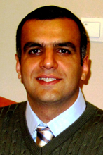
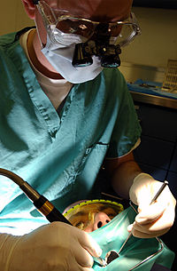
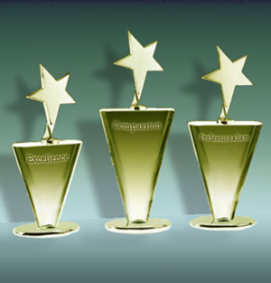
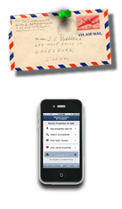

Dr shahravan
biography

Arash Shahravan
Born on November 2nd , 1965
Place of Birth: Tehran
In 2002, I married doctor Fahimeh Shadifar and has a son named Arses.
In 1993 I was graduated from Kamal high school in Tehran and was accepted in dentistry in Beheshti University of Medical Sciences in Tehran the same year.
In 1999 I was graduated from this course. In 2000 I was accepted as a resident in endodontics (root canal therapy) in Mashhad University of Medical Sciences and graduated in 2003 and I could achieve the board.
I started to work in the university of Medical Sciences of Kerman as an educational board and science assistance in 2003 and now I am employed officially. Also I opened a private policlinic in the city of Kerman in 2004. I began to study for Oral Epidemiology PHD from October 2011.
JointheCommunity
1. Member of Iranian As Member of the Medical Council from 1999.
2. sociation of Endodontists from 2004.
3. Member of International Association of Dental Research from 2007.
Administrative records

1. Supervisor of Student Research Committee of Dental Branch of Beheshti University of Medical Sciences from 1997 to 1999.
2. Member of University Research Council since 2008 so far
3. Research Assistant, Kerman Dental School from 2008 to 2010 and from 2011 to present
4. Supervisor of Oral and Dental Diseases Research Center, Kerman University of Medical Sciences from 2009 so far
5. Managing director of Oral Health and Oral Epidemiology Magazine from 2011 so far
6. Member of Strategic Council on Dental Research Network from 2011 to present
7. Supervisor of Empowerment Committee EDO School of Dentistry from 2010 so far
8. Referee of Journal of Kerman School of Dentistry, Iranian endodontic journal, Oral Health and Oral pidemiology
Thesis
The general course: Knowledge, attitude and practice of dental students of the seventh semester of Beheshti Dental School about oral health and its promotion practices in the community in 1998. The specialized courses: Survey of Histology course of dog dental pulp after the same stimulation compared with teeth that have been restored , date of enactment 2003 defense Khordad 2004
Articles
1. A case of furcation perforation repair area with caries etiology. Journal of Dental School, Shahid Beheshti University of Medical Sciences. A. Shahravan, Hessam Rahimi, 2005.
2. Effect of smear layer on sealing ability of canal obturation: a systematic review and meta-analysis
3. Effect of 808nm Diode Laser Irradiation on Root Canal Wall after Smear Layer removal: A Scanning Electron Microscope Study
4. A digital steromicroscopic study of the furcation wall thickness of mesiobuccal roots of maxillary first and second molars
5.A Histological study of the pulp of dog 's teeth after induction of experimental pulp inflammation for different periods of time
6. Periapical status and quality of root Canal fillings in Iranian population
7. Qualitative assessment of the dental health services provided dental school in Kerman Iran
8. Trend in dental research output in Iran over a period
of 20 years (1990-2009)
Masoumeh Sadeghi1, Arash Shahravan1, Ali Akbar Haghdoost2, Saeed Asgary3 and Maryam Rad1
9. A histological study of pulp reaction to various
water / powder ratios of white mineral trioxide
aggregate as pulp-capping material in human teeth:
a double-blinded, randomized controlled trial
10. Overextension of Nonsetting Calcium Hydroxide in Endodontic Treatment: Literature Review and Case Report
At
11. Apical sealing ability of MTA in different liquid to powder ratios and packing methods
12. Statistics for dental researchers; part 1: Introduction
Arash Shahravan DDS, MSc, Mohammad Reza Baneshi PhD
Presentation

Methodology for measuring endodontic diagnostic tests and assessing part of the research papers in this field.
Review of techniques to clean and shape the canal.
Ideal radiography in endodontic
Fracture of rotary NiTi instruments Consequences and Prevention
Meta-analysis of the smear layer on microleakage filled channels
Treatment of necrotic teeth with open apex
Periapical status of teeth and its relation to quality of root canal therapy and crown restorations in Iran
Spatial distribution of DMF index: a systematic review and meta-analysis
Dental research in Iran
Clinical Manual of rotary nickel-titanium systems
Evidence-based endodontics
Is endodontics based on evidence?
Use of the microscope in endodontics
Assessing success of ultrasonic technique with dental microscope to remove
Evidence-based endodontics from fantasy to reality
Author of the book:
Complete reference to the fundamentals, tools and methods to prepare channel, Carver Press
First edition 2005, second edition 2008
Authors: Doctor A. Shahravan , Doctor Hesam Rahimi, Doctor Mohammed Jafar Iqbal, Doctor Amin Movahedian, Doctor Saeed Moradi
References to articles in scientific books:
1.Cohen S, Hargreaves K: Pathways of the pulp. 10th edition, 2011
2. Gunnar Bergenholtz. Text book of Endodontology, second edition, 2010
Academic awards
1. First place of Book of the year of Iran in 2006 2. First Place Award of Shahid Ahmad Hedayat in 2005 in section of Dentistry Publications
Contact

Office address: Department of Endodontics, School of Dentistry, Next to Shafa Hospital, Shafa St.,Jomhurie Islami (Islamic Republic) Blvd., Kerman, Iran.
Office phone: +98341 - 2118071-4
Fax: +98341 -2118073
Policlinic address: Fourth Floor, Pezeshkane Hakim Building, Esteghlal St., Kerman, Iran.
Policlinic Tel: +98341-2474329/ +98341-2474315
Email: arashahravan@gmail.com